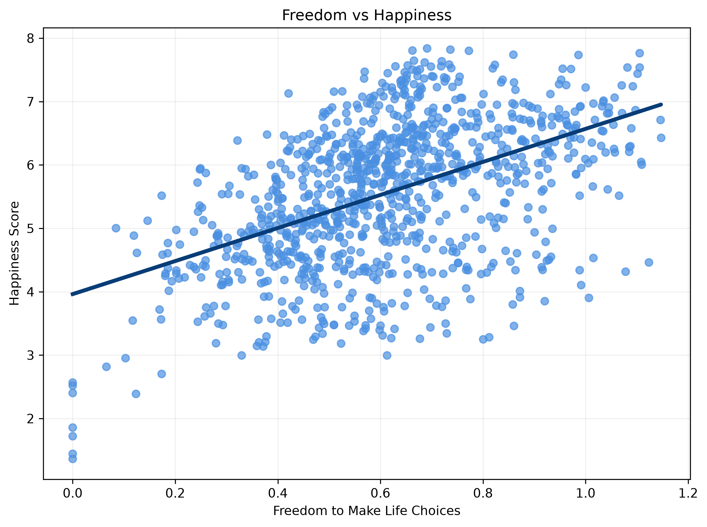
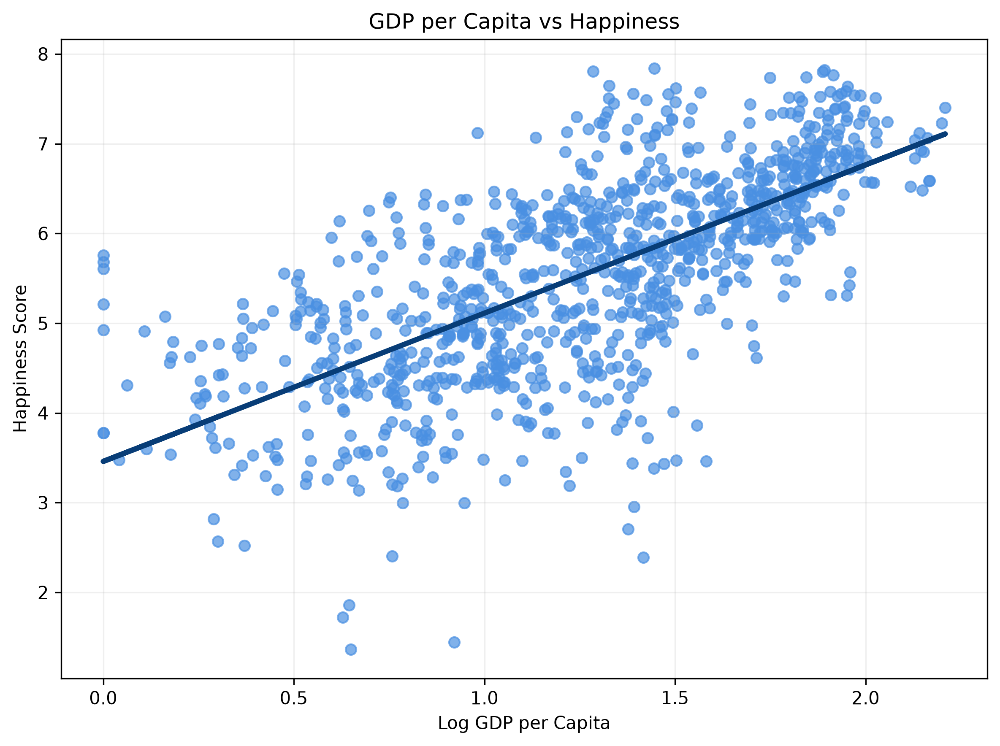
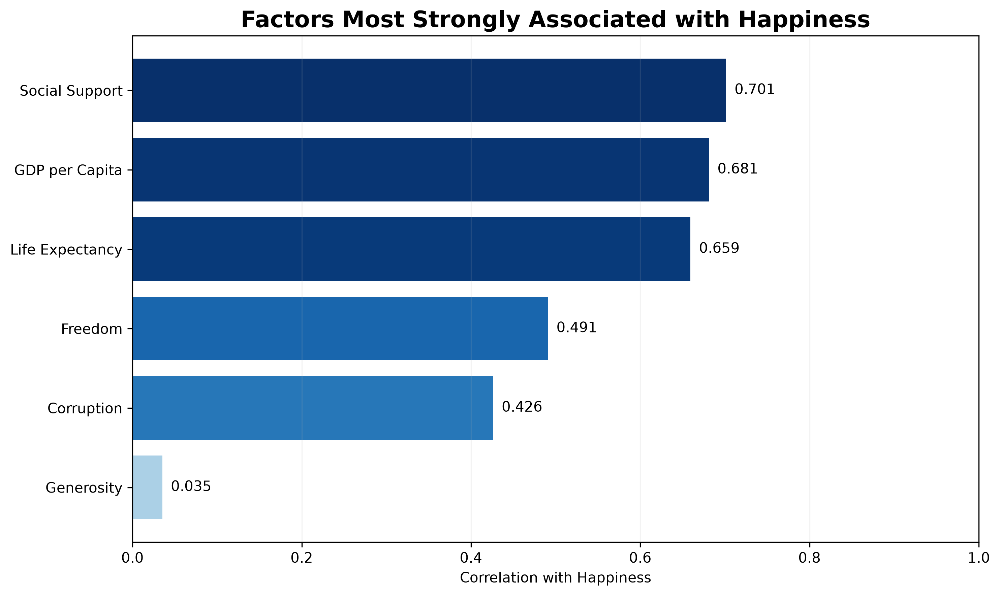

Social support
Social support had the strongest positive correlation with happiness in this analysis.
World Happiness Report 2026 Data Study
This study compares national happiness scores with several social and economic indicators, including freedom to make life choices, GDP per capita, social support, healthy life expectancy, generosity, and perceptions of corruption.
These charts show correlation, not causation. A strong relationship between two variables does not prove that one directly causes the other. Other social, historical, political, or economic factors may also influence happiness scores.
Social support had the strongest positive correlation with happiness in this analysis.
Countries with higher log GDP per capita tended to report higher happiness scores.
Freedom to make life choices showed a moderate positive relationship with happiness.
The scatterplot below compares freedom to make life choices with happiness scores. The trend line shows a positive association.

This chart compares log GDP per capita with happiness scores. The relationship is positive and stronger than the freedom relationship in this dataset.

This bar chart ranks the measured factors by their correlation with happiness. Social support, GDP per capita, and healthy life expectancy were the strongest associations.

The analysis used Pearson correlation coefficients to measure the linear relationship between happiness scores and each factor. Missing values were removed before each correlation was calculated.